- 00 开篇词 这一次，让我们一起来搞懂MySQL.md
- 01 基础架构：一条SQL查询语句是如何执行的？.md
- 02 日志系统：一条SQL更新语句是如何执行的？.md
- 03 事务隔离：为什么你改了我还看不见？.md
- 04 深入浅出索引（上）.md
- 05 深入浅出索引（下）.md
- 06 全局锁和表锁 ：给表加个字段怎么有这么多阻碍？.md
- 07 行锁功过：怎么减少行锁对性能的影响？.md
- 08 事务到底是隔离的还是不隔离的？.md
- 09 普通索引和唯一索引，应该怎么选择？.md
- 10 MySQL为什么有时候会选错索引？.md
- 11 怎么给字符串字段加索引？.md
- 12 为什么我的MySQL会“抖”一下？.md
- 13 为什么表数据删掉一半，表文件大小不变？.md
- 14 count()这么慢，我该怎么办？.md
- 15 答疑文章（一）：日志和索引相关问题.md
- 16 “order by”是怎么工作的？.md
- 17 如何正确地显示随机消息？.md
- 18 为什么这些SQL语句逻辑相同，性能却差异巨大？.md
- 19 为什么我只查一行的语句，也执行这么慢？.md
- 20 幻读是什么，幻读有什么问题？.md
- 21 为什么我只改一行的语句，锁这么多？.md
- 22 MySQL有哪些“饮鸩止渴”提高性能的方法？.md
- 23 MySQL是怎么保证数据不丢的？.md
- 24 MySQL是怎么保证主备一致的？.md
- 25 MySQL是怎么保证高可用的？.md
- 26 备库为什么会延迟好几个小时？.md
- 27 主库出问题了，从库怎么办？.md
- 28 读写分离有哪些坑？.md
- 29 如何判断一个数据库是不是出问题了？.md
- 30 答疑文章（二）：用动态的观点看加锁.md
- 31 误删数据后除了跑路，还能怎么办？.md
- 32 为什么还有kill不掉的语句？.md
- 33 我查这么多数据，会不会把数据库内存打爆？.md
- 34 到底可不可以使用join？.md
- 35 join语句怎么优化？.md
- 36 为什么临时表可以重名？.md
- 37 什么时候会使用内部临时表？.md
- 38 都说InnoDB好，那还要不要使用Memory引擎？.md
- 39 自增主键为什么不是连续的？.md
- 40 insert语句的锁为什么这么多？.md
- 41 怎么最快地复制一张表？.md
- 42 grant之后要跟着flush privileges吗？.md
- 43 要不要使用分区表？.md
- 44 答疑文章（三）：说一说这些好问题.md
- 45 自增id用完怎么办？.md
- 我的MySQL心路历程.md
- 结束语 点线网面，一起构建MySQL知识网络.md
19 为什么我只查一行的语句，也执行这么慢？
一般情况下，如果我跟你说查询性能优化，你首先会想到一些复杂的语句，想到查询需要返回大量的数据。但有些情况下，“查一行”，也会执行得特别慢。今天，我就跟你聊聊这个有趣的话题，看看什么情况下，会出现这个现象。
需要说明的是，如果 MySQL 数据库本身就有很大的压力，导致数据库服务器 CPU 占用率很高或 ioutil（IO 利用率）很高，这种情况下所有语句的执行都有可能变慢，不属于我们今天的讨论范围。
为了便于描述，我还是构造一个表，基于这个表来说明今天的问题。这个表有两个字段 id 和 c，并且我在里面插入了 10 万行记录。
mysql> CREATE TABLE `t` (
`id` int(11) NOT NULL,
`c` int(11) DEFAULT NULL,
PRIMARY KEY (`id`)
) ENGINE=InnoDB;
delimiter ;;
create procedure idata()
begin
declare i int;
set i=1;
while(i<=100000)do
insert into t values(i,i);
set i=i+1;
end while;
end;;
delimiter ;
call idata();
接下来，我会用几个不同的场景来举例，有些是前面的文章中我们已经介绍过的知识点，你看看能不能一眼看穿，来检验一下吧。
第一类：查询长时间不返回
如图 1 所示，在表 t 执行下面的 SQL 语句：
mysql> select * from t where id=1;
查询结果长时间不返回。
图 1 查询长时间不返回
一般碰到这种情况的话，大概率是表 t 被锁住了。接下来分析原因的时候，一般都是首先执行一下 show processlist 命令，看看当前语句处于什么状态。
然后我们再针对每种状态，去分析它们产生的原因、如何复现，以及如何处理。
等 MDL 锁
如图 2 所示，就是使用 show processlist 命令查看 Waiting for table metadata lock 的示意图。
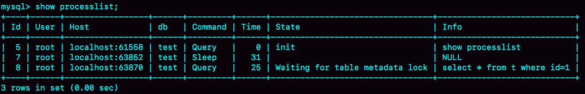
图 2 Waiting for table metadata lock 状态示意图
出现这个状态表示的是，现在有一个线程正在表 t 上请求或者持有 MDL 写锁，把 select 语句堵住了。
在第 6 篇文章[《全局锁和表锁 ：给表加个字段怎么有这么多阻碍？》]中，我给你介绍过一种复现方法。但需要说明的是，那个复现过程是基于 MySQL 5.6 版本的。而 MySQL 5.7 版本修改了 MDL 的加锁策略，所以就不能复现这个场景了。
不过，在 MySQL 5.7 版本下复现这个场景，也很容易。如图 3 所示，我给出了简单的复现步骤。 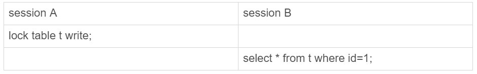
图 3 MySQL 5.7 中 Waiting for table metadata lock 的复现步骤
session A 通过 lock table 命令持有表 t 的 MDL 写锁，而 session B 的查询需要获取 MDL 读锁。所以，session B 进入等待状态。
这类问题的处理方式，就是找到谁持有 MDL 写锁，然后把它 kill 掉。
但是，由于在 show processlist 的结果里面，session A 的 Command 列是“Sleep”，导致查找起来很不方便。不过有了 performance_schema 和 sys 系统库以后，就方便多了。（MySQL 启动时需要设置 performance_schema=on，相比于设置为 off 会有 10% 左右的性能损失)
通过查询 sys.schema_table_lock_waits 这张表，我们就可以直接找出造成阻塞的 process id，把这个连接用 kill 命令断开即可。
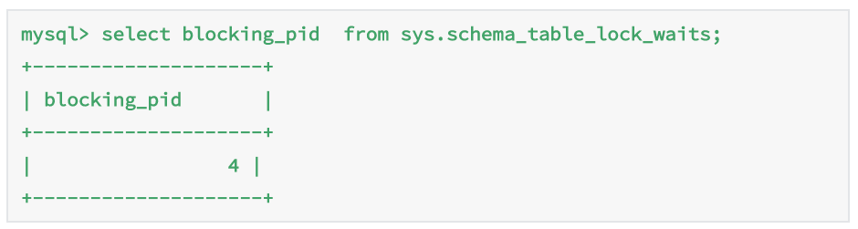
图 4 查获加表锁的线程 id
等 flush
接下来，我给你举另外一种查询被堵住的情况。
我在表 t 上，执行下面的 SQL 语句：
mysql> select * from information_schema.processlist where id=1;
这里，我先卖个关子。
你可以看一下图 5。我查出来这个线程的状态是 Waiting for table flush，你可以设想一下这是什么原因。 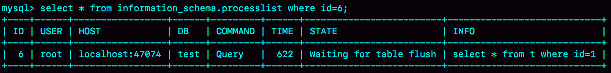
图 5 Waiting for table flush 状态示意图
这个状态表示的是，现在有一个线程正要对表 t 做 flush 操作。MySQL 里面对表做 flush 操作的用法，一般有以下两个：
flush tables t with read lock;
flush tables with read lock;
这两个 flush 语句，如果指定表 t 的话，代表的是只关闭表 t；如果没有指定具体的表名，则表示关闭 MySQL 里所有打开的表。
但是正常这两个语句执行起来都很快，除非它们也被别的线程堵住了。
所以，出现 Waiting for table flush 状态的可能情况是：有一个 flush tables 命令被别的语句堵住了，然后它又堵住了我们的 select 语句。
现在，我们一起来复现一下这种情况，复现步骤如图 6 所示：
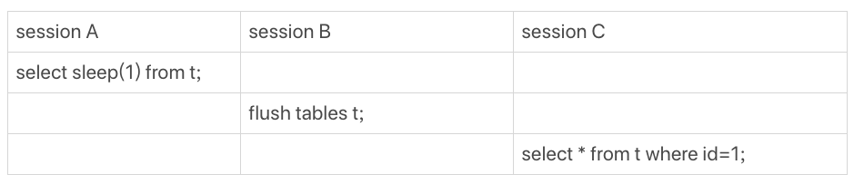
图 6 Waiting for table flush 的复现步骤
在 session A 中，我故意每行都调用一次 sleep(1)，这样这个语句默认要执行 10 万秒，在这期间表 t 一直是被 session A“打开”着。然后，session B 的 flush tables t 命令再要去关闭表 t，就需要等 session A 的查询结束。这样，session C 要再次查询的话，就会被 flush 命令堵住了。
图 7 是这个复现步骤的 show processlist 结果。这个例子的排查也很简单，你看到这个 show processlist 的结果，肯定就知道应该怎么做了。
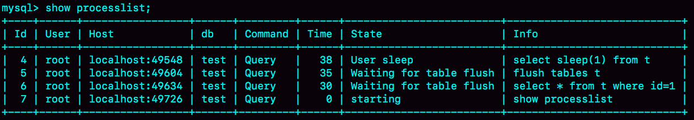
图 7 Waiting for table flush 的 show processlist 结果
等行锁
现在，经过了表级锁的考验，我们的 select 语句终于来到引擎里了。
mysql> select * from t where id=1 lock in share mode;
上面这条语句的用法你也很熟悉了，我们在第 8 篇[《事务到底是隔离的还是不隔离的？》]文章介绍当前读时提到过。
由于访问 id=1 这个记录时要加读锁，如果这时候已经有一个事务在这行记录上持有一个写锁，我们的 select 语句就会被堵住。
复现步骤和现场如下：
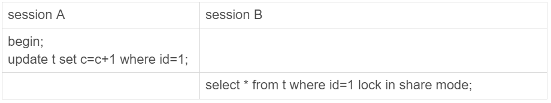
图 8 行锁复现
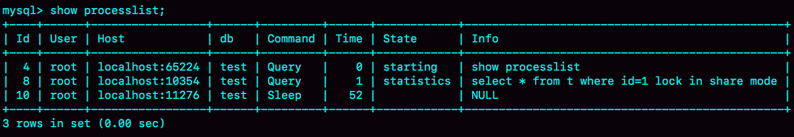
图 9 行锁 show processlist 现场
显然，session A 启动了事务，占有写锁，还不提交，是导致 session B 被堵住的原因。
这个问题并不难分析，但问题是怎么查出是谁占着这个写锁。如果你用的是 MySQL 5.7 版本，可以通过 sys.innodb_lock_waits 表查到。
查询方法是：
mysql> select * from t sys.innodb_lock_waits where locked_table=`'test'.'t'`\G
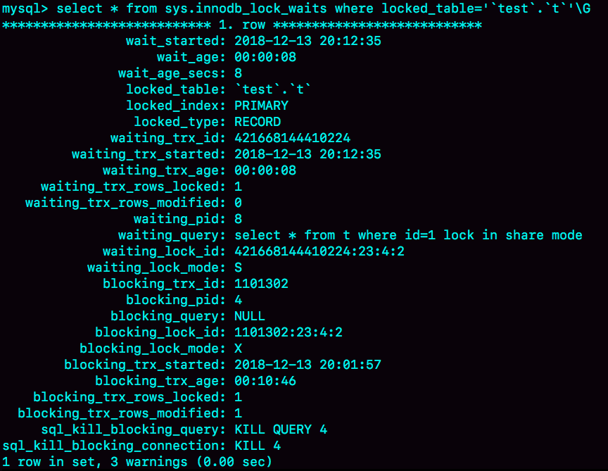
图 10 通过 sys.innodb_lock_waits 查行锁
可以看到，这个信息很全，4 号线程是造成堵塞的罪魁祸首。而干掉这个罪魁祸首的方式，就是 KILL QUERY 4 或 KILL 4。
不过，这里不应该显示“KILL QUERY 4”。这个命令表示停止 4 号线程当前正在执行的语句，而这个方法其实是没有用的。因为占有行锁的是 update 语句，这个语句已经是之前执行完成了的，现在执行 KILL QUERY，无法让这个事务去掉 id=1 上的行锁。
实际上，KILL 4 才有效，也就是说直接断开这个连接。这里隐含的一个逻辑就是，连接被断开的时候，会自动回滚这个连接里面正在执行的线程，也就释放了 id=1 上的行锁。
第二类：查询慢
经过了重重封“锁”，我们再来看看一些查询慢的例子。
先来看一条你一定知道原因的 SQL 语句：
mysql> select * from t where c=50000 limit 1;
由于字段 c 上没有索引，这个语句只能走 id 主键顺序扫描，因此需要扫描 5 万行。
作为确认，你可以看一下慢查询日志。注意，这里为了把所有语句记录到 slow log 里，我在连接后先执行了 set long_query_time=0，将慢查询日志的时间阈值设置为 0。
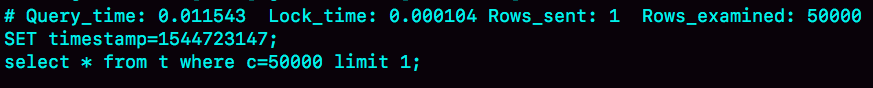
图 11 全表扫描 5 万行的 slow log
Rows_examined 显示扫描了 50000 行。你可能会说，不是很慢呀，11.5 毫秒就返回了，我们线上一般都配置超过 1 秒才算慢查询。但你要记住：坏查询不一定是慢查询。我们这个例子里面只有 10 万行记录，数据量大起来的话，执行时间就线性涨上去了。
扫描行数多，所以执行慢，这个很好理解。
但是接下来，我们再看一个只扫描一行，但是执行很慢的语句。
如图 12 所示，是这个例子的 slow log。可以看到，执行的语句是
mysql> select * from t where id=1；
虽然扫描行数是 1，但执行时间却长达 800 毫秒。
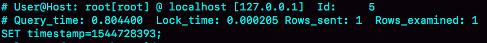
图 12 扫描一行却执行得很慢
是不是有点奇怪呢，这些时间都花在哪里了？
如果我把这个 slow log 的截图再往下拉一点，你可以看到下一个语句，select * from t where id=1 lock in share mode，执行时扫描行数也是 1 行，执行时间是 0.2 毫秒。
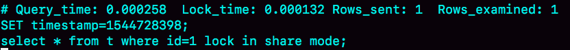
图 13 加上 lock in share mode 的 slow log
看上去是不是更奇怪了？按理说 lock in share mode 还要加锁，时间应该更长才对啊。
可能有的同学已经有答案了。如果你还没有答案的话，我再给你一个提示信息，图 14 是这两个语句的执行输出结果。
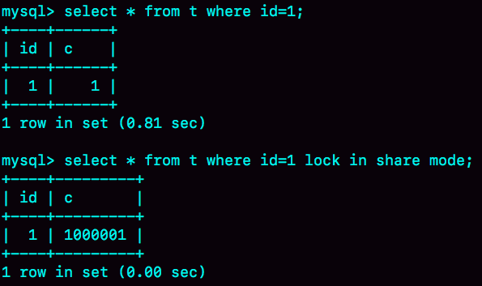
图 14 两个语句的输出结果
第一个语句的查询结果里 c=1，带 lock in share mode 的语句返回的是 c=1000001。看到这里应该有更多的同学知道原因了。如果你还是没有头绪的话，也别着急。我先跟你说明一下复现步骤，再分析原因。
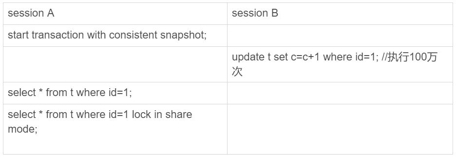
图 15 复现步骤
你看到了，session A 先用 start transaction with consistent snapshot 命令启动了一个事务，之后 session B 才开始执行 update 语句。
session B 执行完 100 万次 update 语句后，id=1 这一行处于什么状态呢？你可以从图 16 中找到答案。
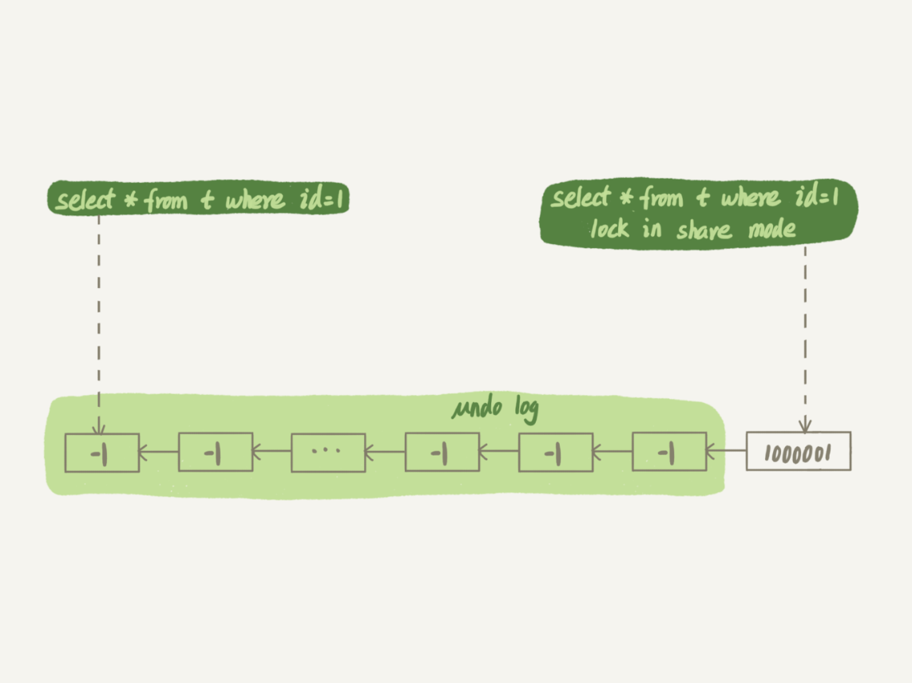
图 16 id=1 的数据状态
session B 更新完 100 万次，生成了 100 万个回滚日志 (undo log)。
带 lock in share mode 的 SQL 语句，是当前读，因此会直接读到 1000001 这个结果，所以速度很快；而 select * from t where id=1 这个语句，是一致性读，因此需要从 1000001 开始，依次执行 undo log，执行了 100 万次以后，才将 1 这个结果返回。
注意，undo log 里记录的其实是“把 2 改成 1”，“把 3 改成 2”这样的操作逻辑，画成减 1 的目的是方便你看图。
小结
今天我给你举了在一个简单的表上，执行“查一行”，可能会出现的被锁住和执行慢的例子。这其中涉及到了表锁、行锁和一致性读的概念。
在实际使用中，碰到的场景会更复杂。但大同小异，你可以按照我在文章中介绍的定位方法，来定位并解决问题。
最后，我给你留一个问题吧。
我们在举例加锁读的时候，用的是这个语句，select * from t where id=1 lock in share mode。由于 id 上有索引，所以可以直接定位到 id=1 这一行，因此读锁也是只加在了这一行上。
但如果是下面的 SQL 语句，
begin;
select * from t where c=5 for update;
commit;
这个语句序列是怎么加锁的呢？加的锁又是什么时候释放呢？
你可以把你的观点和验证方法写在留言区里，我会在下一篇文章的末尾给出我的参考答案。感谢你的收听，也欢迎你把这篇文章分享给更多的朋友一起阅读。
上期问题时间
在上一篇文章最后，我留给你的问题是，希望你可以分享一下之前碰到过的、与文章中类似的场景。
@封建的风 提到一个有趣的场景，值得一说。我把他的问题重写一下，表结构如下：
mysql> CREATE TABLE `table_a` (
`id` int(11) NOT NULL,
`b` varchar(10) DEFAULT NULL,
PRIMARY KEY (`id`),
KEY `b` (`b`)
) ENGINE=InnoDB;
假设现在表里面，有 100 万行数据，其中有 10 万行数据的 b 的值是’1234567890’， 假设现在执行语句是这么写的:
mysql> select * from table_a where b='1234567890abcd';
这时候，MySQL 会怎么执行呢？
最理想的情况是，MySQL 看到字段 b 定义的是 varchar(10)，那肯定返回空呀。可惜，MySQL 并没有这么做。
那要不，就是把’1234567890abcd’拿到索引里面去做匹配，肯定也没能够快速判断出索引树 b 上并没有这个值，也很快就能返回空结果。
但实际上，MySQL 也不是这么做的。
这条 SQL 语句的执行很慢，流程是这样的：
- 在传给引擎执行的时候，做了字符截断。因为引擎里面这个行只定义了长度是 10，所以只截了前 10 个字节，就是’1234567890’进去做匹配；
- 这样满足条件的数据有 10 万行；
- 因为是 select *， 所以要做 10 万次回表；
- 但是每次回表以后查出整行，到 server 层一判断，b 的值都不是’1234567890abcd’;
- 返回结果是空。
这个例子，是我们文章内容的一个很好的补充。虽然执行过程中可能经过函数操作，但是最终在拿到结果后，server 层还是要做一轮判断的。